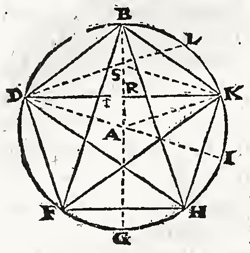

Proposition XLV: Non-Constructibility of the Regular Heptagon¶
Proposition XLV (*Enunciation*): The side of the Regular Heptagon (*Septangulum*, :g:`HEPT`), and every figure whose number of sides is a prime number beyond five (such as 7, 11, 13, 17?, 19) or a multiple of nine, lacks geometric knowability and cannot be constructed from the diameter by Euclidean plane geometry.
For consider the heptagonal triangle BEF inscribed in circle cHEPT around center A (vertices B–C–D–E–F–G–H on p. 32), bounded by three unequal chords: the heptagon side EF, the short diagonal $s_2$, and the long diagonals BE and BF. Unlike the pentagon—where only two chord species exist ($s_5$ and $d_5$), locking their ratio immediately into a quadratic equation $x^2 - x - 1 = 0$ solvable by a circle and straight line—the heptagon entangles three chord species simultaneously!

My ingenious friend Jost Bürgi (Justus Byrgius) has indeed exhibited an algebraic (Cossic) equation relating the chord of one-seventh of the circumference to the radius:
$$y^6 - 7y^4 + 14y^2 - 7 = 0 \qquad \Longleftrightarrow \qquad x^3 + x^2 - 2x - 1 = 0 \quad \left(x = 2\cos\frac{2\pi}{7}\right).$$
Yet I reply that algebraic root-reckoning is not Euclidean geometric determination! First, this equation climbs to the cubic (third) solid degree in $x$ (or sixth in $y$), which no intersection of straight lines and circles in a plane can cut off; second, the very same algebraic equation admits three distinct real roots simultaneously—answering indifferently to the convex heptagon chord $\frac{1}{7}$, the first star heptagram $\frac{2}{7}$, and the second star heptagram $\frac{3}{7}$—without singling out one magnitude from the diameter by finite geometric necessity:
“Therefore no Regular Heptagon has ever been constructed by anyone knowingly, willingly, and acting from deliberate geometrical purpose; nor **can* it be constructed from deliberate purpose—though by blind chance its length might be stumbled upon, without anyone ever knowing whether it has been!”*


Thus the Creator excluded the heptagon, enneagon ($n = 9$), hendecagon ($n = 11$), and their kin from the archetypal council of cosmic harmonies.